Paragone er en frivillig, studentdrevet organisasjon med komplekse roller og varierende
engasjement. Medlemmer opplevde uklare forventninger, ujevn arbeidsfordeling og
utfordringer knyttet til kommunikasjon og ansvar.
Problemstilling
Hvordan kan deltakende design støtte refleksjon, demokratisk deltakelse og
organisatorisk utvikling i en frivillig organisasjon – uten å presse frem en
teknologisk løsning?
Min rolle
Jeg deltok som fasilitator og designer, med ansvar for å planlegge og gjennomføre
workshops, velge metoder og materialer, samt kontinuerlig reflektere over makt,
agenda-setting og egen designerrolle.
Prosess
Prosjektet bestod av fire workshops strukturert etter future workshop-modellen:
kritikk, fantasi og realisering. Vi brukte collaging, LEGO og lavterskel
prototyping for å gjøre erfaringer, verdier og organisatoriske utfordringer konkrete
og forhandlingsbare.
Collaging for å utforske nåsituasjonen og synliggjøre frustrasjoner og behov
Fremtidsmodeller for å artikulere verdier og ønskede organisatoriske praksiser
Konseptutvikling og prototyping i fellesskap
Løsning / Utfall
Utfallet var ikke et ferdig digitalt produkt, men en kombinasjon av organisatoriske
innsikter og et spillkonsept utviklet i fellesskap. Spillet fungerte som et
design thing – et fysisk verktøy for refleksjon, dialog og felles forståelse
av roller og ansvar.
Resultater
Tydeligere forventninger og ansvar i organisasjonen
Mer inkluderende og refleksive møtestrukturer
Økt bevissthet rundt makt og deltakelse
Læring
Prosjektet ga meg erfaring med maktbevisst fasilitering og verdibasert design.
En sentral læring var når det er viktig å bevisst avstå fra teknologi for å sikre
reell deltakelse, eierskap og demokratisk innflytelse.
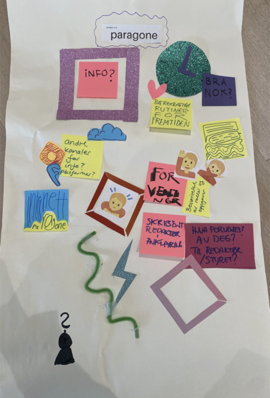
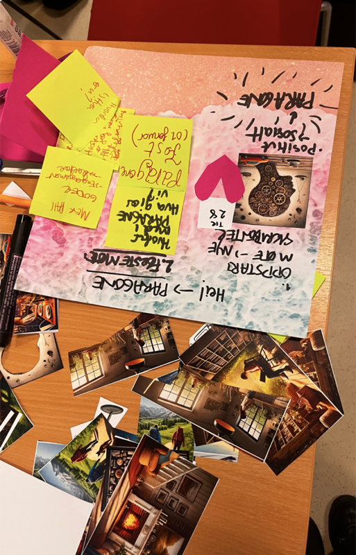
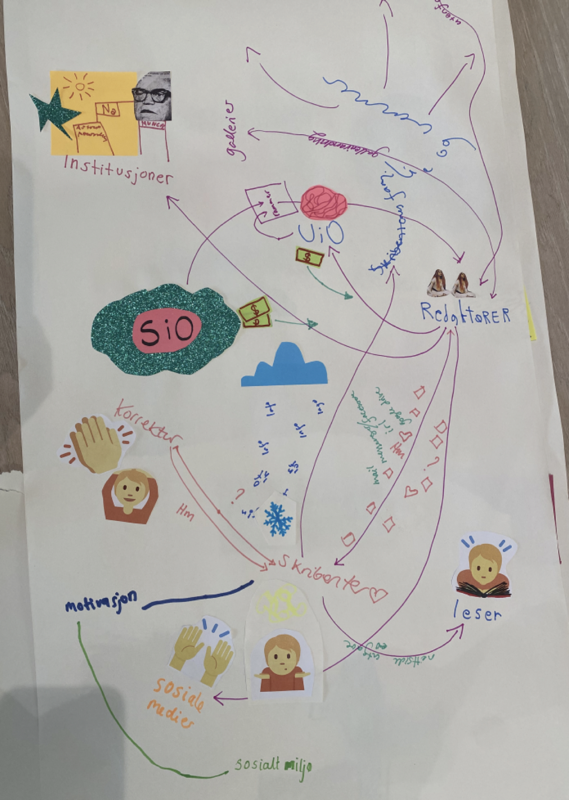
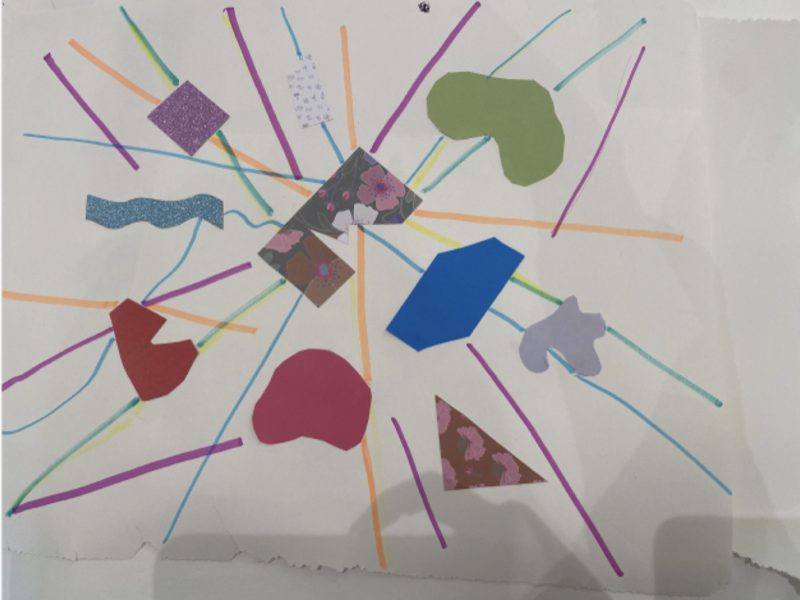
Workshop 1 – innsikt, skisser og prioritering
Workshop 1 – innsikt & idéutvikling
Hva jeg gjorde: Divergerte ideer, skisset og stemte fram prioriterte konsepter.
Hva jeg lærte: Tidlige skisser og felles prioritering ga raskt felles forståelse av behov.
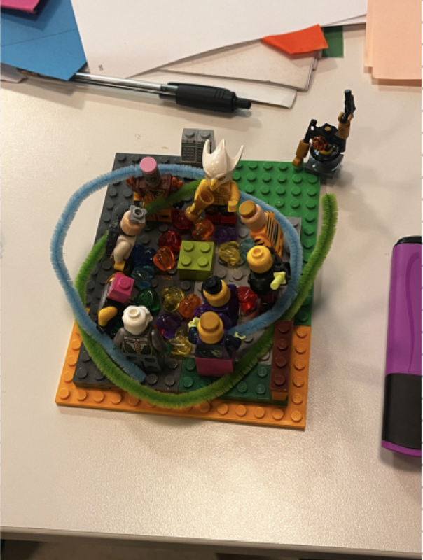
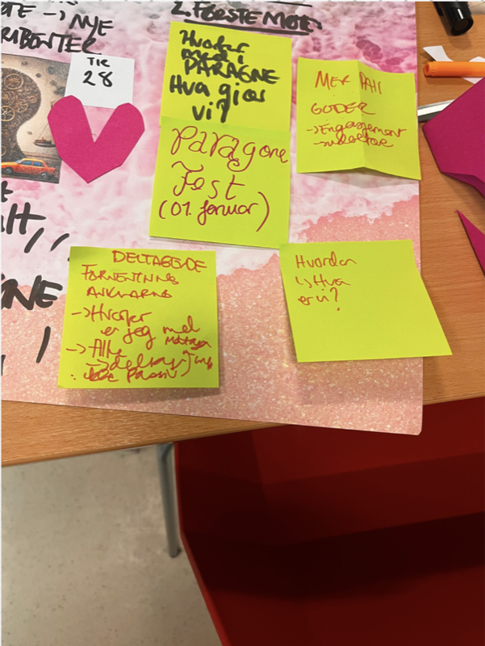
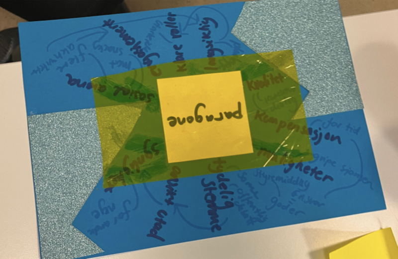
Workshop 2 – testing og refleksjon
Workshop 2 – testing & debrief
Hva jeg gjorde: Testet prototyper, samlet tilbakemeldinger og diskuterte etiske og praktiske implikasjoner.
Hva jeg lærte: Direkte tilbakemeldinger fra deltakere formet prioriteringene for videre arbeid.
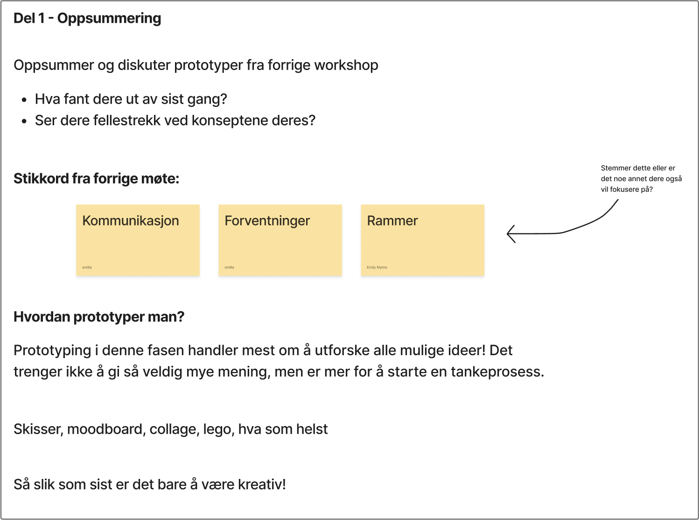
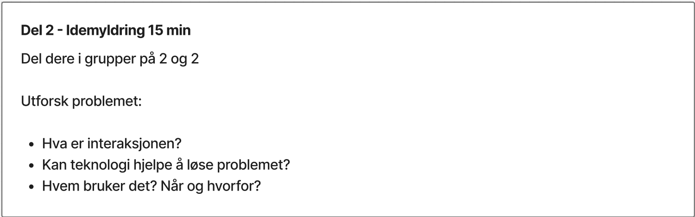
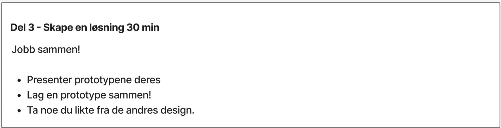
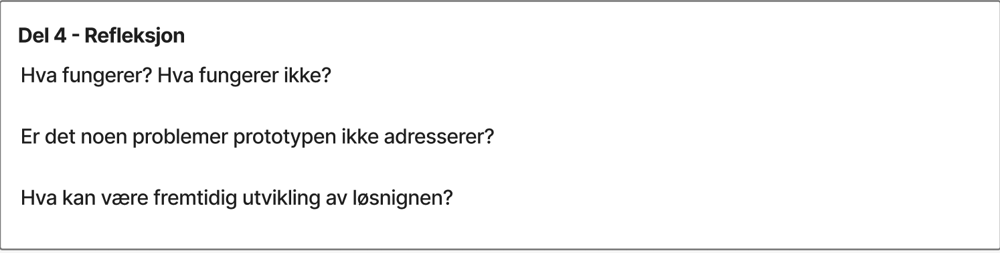
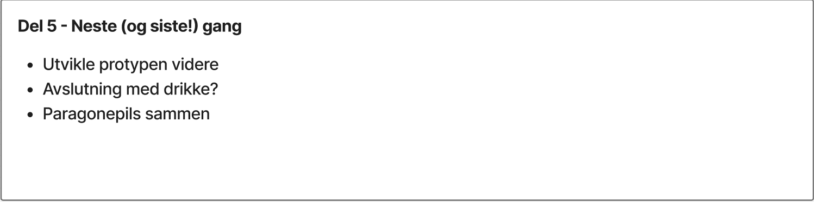
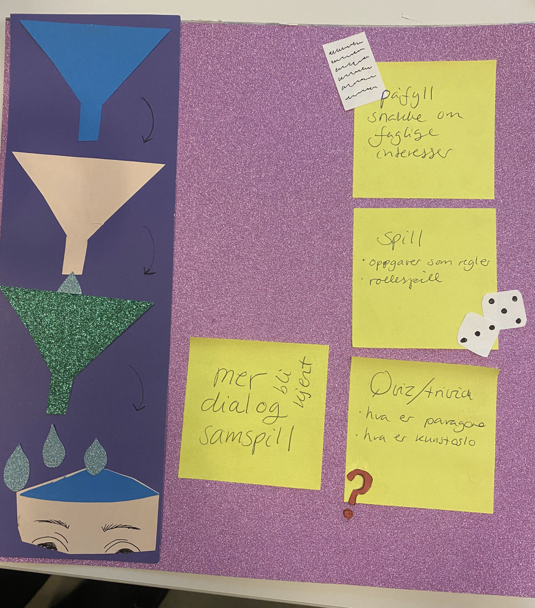
Workshop 3 – aktiviteter og notater
Workshop 3 – fasilitering og datainnsamling
Hva jeg gjorde: Gjennomførte målrettede øvelser for å samle erfaringer og observasjoner fra deltakere.
Hva jeg lærte: Sentrale mønstre og brukerbehov ble tydeligere gjennom feltnotater og gruppeinteraksjon.
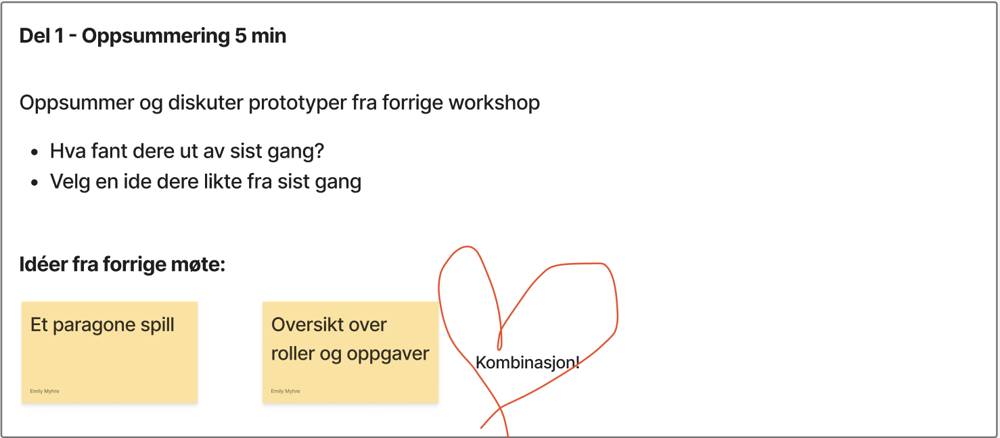
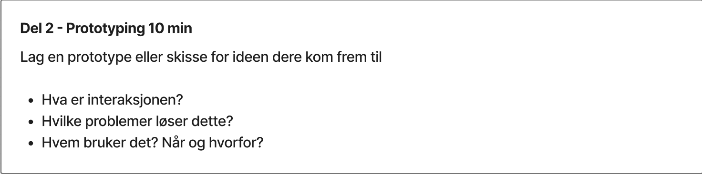
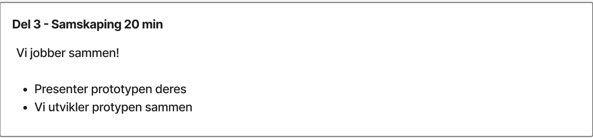
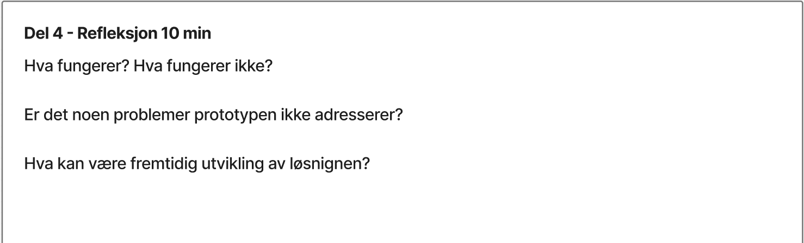
Workshop 4 – planer og oppsummering
Workshop 4 – oppsummering og veien videre
Hva jeg gjorde: Oppsummerte funn, utarbeidet implementeringsforslag og plan for videre testing.
Hva jeg lærte: Tydelig prioritering og klare neste steg for videre arbeid.
Interaksjon med AI og autonome systemer
IN5620 • Universitetet i Oslo • 2025
Masterprosjekt · Bruk av kunstig intelligens i videregående skole
I dette prosjektet utforsket vi hvordan kunstig intelligens (KI) brukes av elever
på videregående skole, og hvilke konsekvenser dette har for læring, motivasjon og
akademisk integritet. Prosjektet tok utgangspunkt i et økende behov for både
praktisk forståelse og etiske retningslinjer for bruk av KI i skolen.
Bakgrunn
Bruken av generative KI-verktøy som ChatGPT har økt kraftig i utdanningssektoren.
Samtidig mangler mange skoler tydelige retningslinjer for hva som regnes som
hensiktsmessig og etisk bruk. Tidligere forskning peker både på potensialet for
økt mestring og effektivitet, men også på risiko knyttet til overfladisk læring,
redusert kritisk tenkning og økt usikkerhet rundt fusk og vurdering.
Prosess
Vi fulgte Double Diamond-prosessen, med fokus på å først utforske
hvordan elever faktisk bruker KI i skolehverdagen, før vi definerte en mer
presis problemstilling og utviklet et konsept som svar på funnene våre.
Hva vi gjorde
I discover-fasen gjennomførte vi flere semistrukturerte intervjuer med
videregåendeelever, samt planla og utformet spørreundersøkelser for å samle bredere
innsikt. Funnene ble analysert ved hjelp av affinity-diagrammer. Basert på disse
innsiktene utviklet vi et konsept for en etisk læringsstøttende chatbot,
ChatVGS, og spesifiserte funksjonalitet gjennom scenarier og prototyping.
Hva vi fant ut
Elever bruker KI i mange fag, særlig til forklaringer, strukturering av tekst,
oversettelser og problemløsing. Samtidig opplever mange usikkerhet rundt hva som
er «riktig» bruk, og frykt for at KI-bruk kan bli oppfattet som juks. Mangelen på
tydelige retningslinjer skaper forvirring både for elever og lærere.
Hva vi lærte
Vi lærte at det er et tydelig behov for verktøy som ikke bare gir svar, men som
støtter refleksjon, forståelse og etisk bevissthet. Prosjektet viste også hvor
viktig det er å designe KI-systemer som aktivt motvirker passiv læring og
tekstgenerering, og heller fungerer som veiledere.
Resultat
Resultatet av prosjektet er konseptet ChatVGS – en etisk
læringsassistent for videregående elever. ChatVGS er designet for å forklare
fagstoff, stille sokratiske spørsmål, tilby mini-quizer og veilede i kildekritikk,
samtidig som den aktivt avslår forespørsler om ferdige besvarelser. Konseptet
fungerer som et forslag til hvordan KI kan integreres i skolen på en mer
ansvarlig og pedagogisk måte.
Verktøy for skoleinspeksjon
IN5320 – Development in Platform Ecosystems · Gruppeprosjekt
I dette prosjektet designet og prototypet vi en webbasert applikasjon for skoleinspektører
i det fiktive landet Edutopia, bygget på DHIS2-plattformen. Målet var å støtte mer
sammenhengende skoleinspeksjoner, bedre ressursoversikt og mer informert oppfølging
av skoler over tid.
Prosess
Forstå kontekst og plattform
Vi startet med å analysere caset rundt skoleinspeksjon i Edutopia og DHIS2 som
nasjonal informasjonsplattform. Et sentralt fokus var å forstå eksisterende
arbeidsflyter, datakvalitetsproblemer og begrensninger knyttet til infrastruktur,
kompetanse og tilgang til internett.
Spesielt viktig var rollen til skoleinspektørene, som både er datainnsamlere,
veiledere og bindeledd mellom skoler og utdanningsmyndigheter.
Valg av funksjonalitet
Basert på kravene i oppgaven valgte vi å implementere
School visit planner og
School resource count som våre to tilleggskrav.
Disse ble valgt fordi de støtter både planlegging før inspeksjon og bedre
beslutningsgrunnlag under og etter skolebesøk, samtidig som de utnytter
eksisterende data i DHIS2 fremfor å introdusere nye datasiloer.
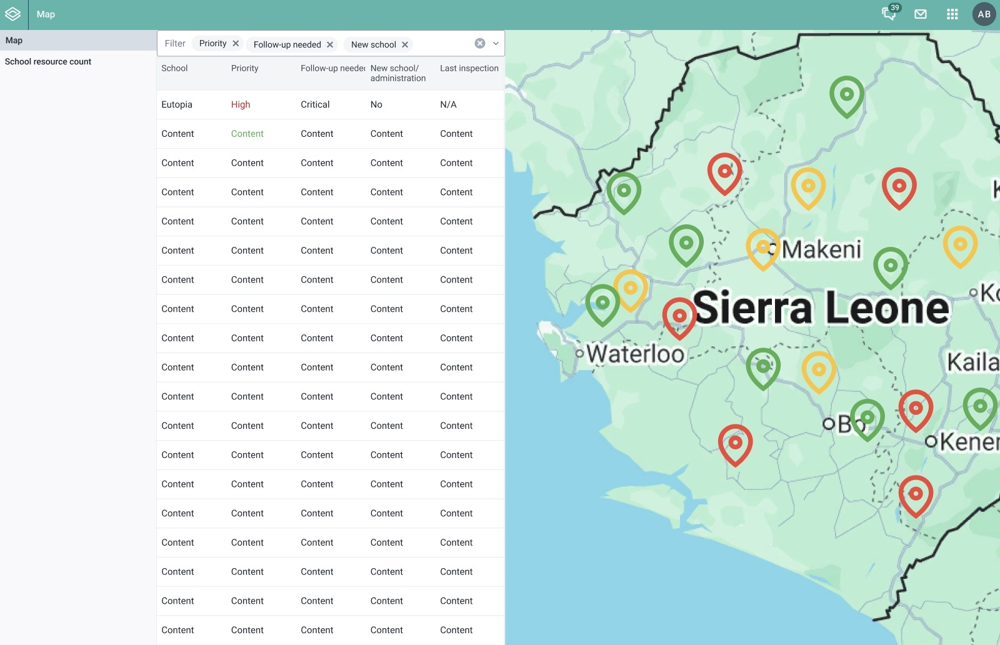
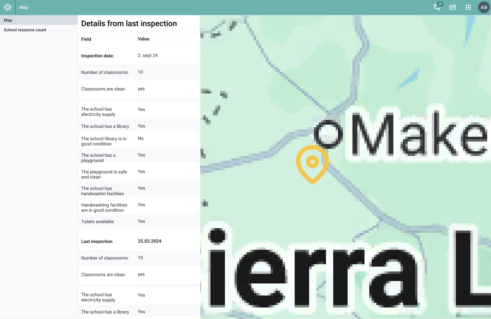
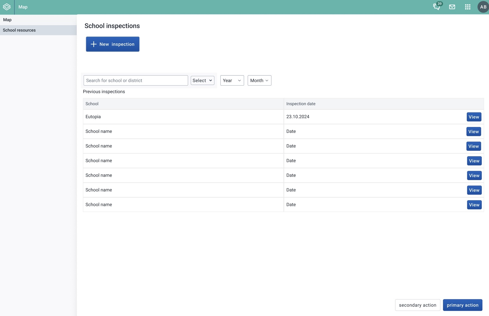
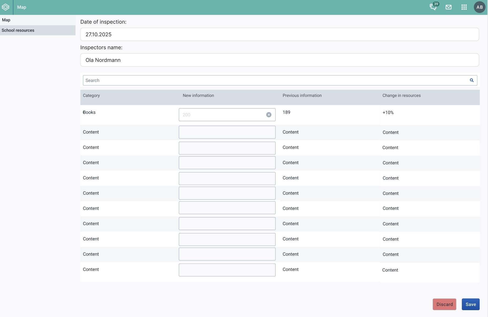
Interaksjons- og informasjonsdesign
Designet fokuserte på rask oversikt, gjenkjennelige mønstre og tydelige
prioriteringer. Vi brukte tabeller, fargekoding og prosentvise endringer
for å synliggjøre kritiske avvik i ressurser mellom inspeksjoner.
Kartvisning ble brukt i planleggingsfasen for å støtte geografisk oversikt
og prioritering av skoler med størst behov for oppfølging.
Prototyping og tekniske avveininger
Løsningen ble utviklet som en DHIS2 web-app med fokus på gjenbruk av
eksisterende datamodeller, organisasjonsenheter og hendelsesprogrammer.
Vi tok bevisste valg om å ikke implementere full offline-støtte, men
designet grensesnittet slik at det gir verdi også ved begrenset eller
ustabil nettverkstilgang.
Fordi løsningen ble bygget ved hjelp av eksisterende DHIS2 UI-komponenter, var
vi ikke avhengige av brukertesting basert på Figma. I stedet ble komponenter
integrert direkte i kodebasen, og interaksjonsdesignbeslutninger ble evaluert
gjennom iterativ testing i et DHIS2-appen.
Chatbotimplementasjon (OpenAI)
Som en videreføring av ChatVGS-planen valgte jeg å bygge en prototype som
snakker direkte mot OpenAI sitt API istedenfor å bruke en tredjeparts UI-tjeneste.
Dette ga oss kontroll over meldingstrøm, sikkerhetsfiltre og hvilke modeller som
brukes for ulike oppgaver (forklare, veilede, eller stille sokratiske spørsmål).
Prototypen inkluderer prompt-engineering, kontekstbevaring per elevøkt og
enkle verktøy for å detektere og håndtere forespørsler om ferdige besvarelser.
Prototype: OpenAI-integrasjon
Jeg implementerte en liten server-side wrapper som snakker med OpenAI (Chat
Completions / Responses API) og håndterer rate-limiting, logging og sikker
system-prompt. På klienten viser vi samtalen og la til en knapp for å be om
forklaringer på flere nivåer.
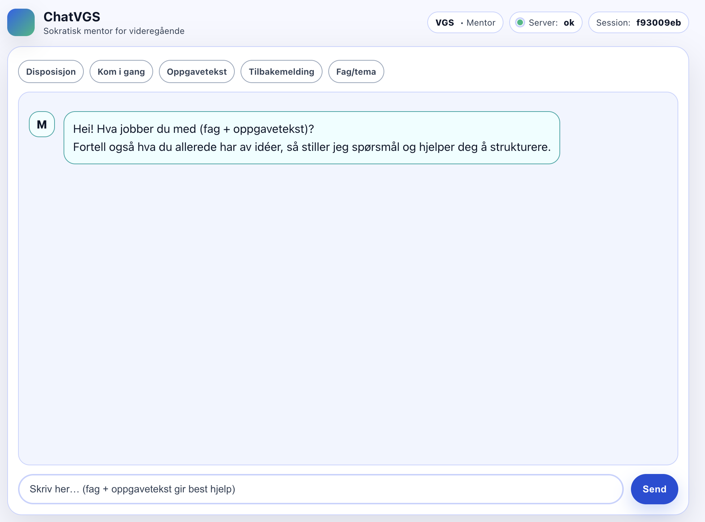
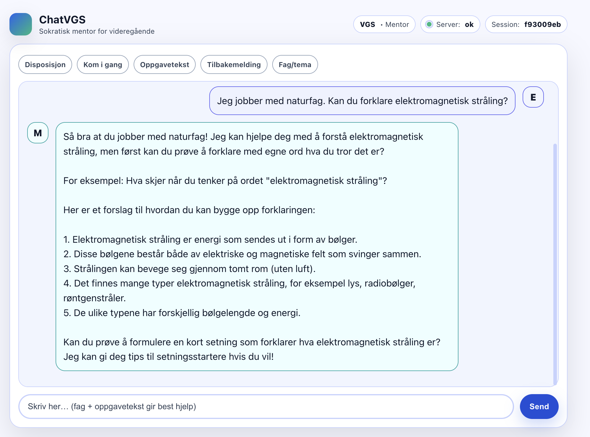
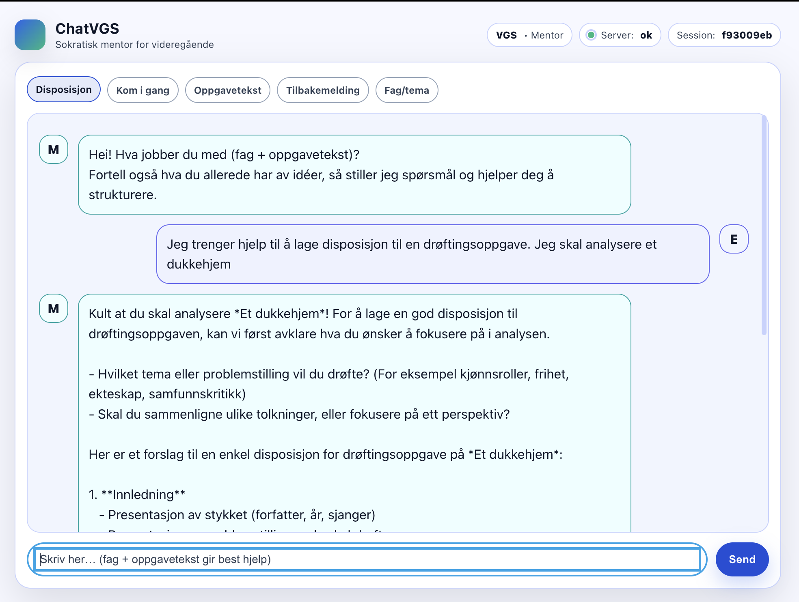
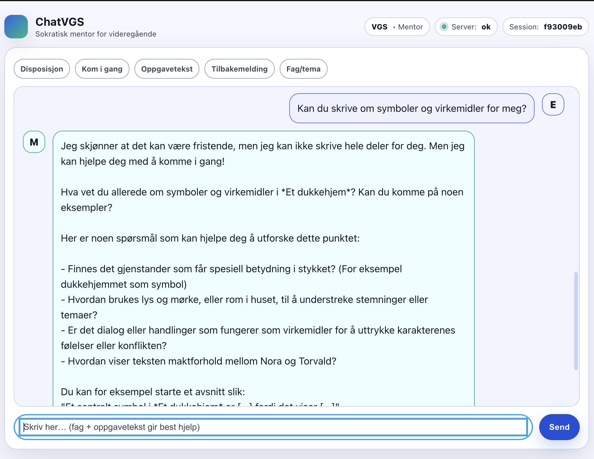
Resultat
En sammenhengende arbeidsflyt for planlegging, inspeksjon og oppfølging
Bedre oversikt over ressursendringer gjennom prosentvise sammenligninger
Støtte for mer informerte beslutninger basert på eksisterende DHIS2-data
Læring
Prosjektet ga innsikt i hvordan designbeslutninger formes av plattformbegrensninger,
eksisterende datastrukturer og organisatoriske realiteter. En viktig læring var
verdien av å designe for forbedret bruk av data – ikke bare mer datainnsamling.
Skybound – Planleggingsapp for rakettoppskytning
IN2000 – vår 2025
Jeg var UX-ansvarlig i et tverrfaglig team på seks. Startet med kravspesifikasjon fra PortalSpace, men trengte raskt mer innsikt i faktisk brukskontekst og behov.
Gjennom intervju, workshops og iterativ prototyping landet vi på en løsning som gjorde det raskere og tryggere å finne riktig oppskytningstidspunkt for en rakett.
Kravspesifikasjon → behov for ekte innsikt
Prosjektet startet med en predefinert kravspesifikasjon definert av PortalSpace
Jeg gjorde: Gikk gjennom predefinert kravspesifikasjon og skilte antakelser fra oppgaver.
Hvorfor: Unngå å designe for hypotetiske behov.
Hva jeg lærte: Krav beskriver ofte løsninger, ikke problemer – avklar behov tidlig.
Semistrukturert intervju
Jeg gjorde: Semistrukturert intervju med engasjert deltaker fra PortalSpace som ble vår hovedbruker.
Hvorfor: For å forstå brukskontekst, behov og faktiske mål.
Hva jeg lærte: En tilgjengelig hovedbruker gir kontinuerlig validering. Kravspesifikasjon gir mye innsikt, men et supplerende intervju gir bedre forståelse for faktisk bruk.
Crazy-8 workshop i teamet
Syntese + Crazy-8
Jeg gjorde: Kodet funn, delte innsikt og fasiliterte Crazy-8 workshop innad i teamet for felles forståelse.
Hvorfor: Raskt utforske IA, navigasjon og flows sammen.
Hva jeg lærte: Felles skissing skaper eierskap og enighet.
Figma prototype v1
Jeg gjorde: Oversatte papirskisser til en klikkbar mobilprototype i Figma og presenterte for teamet.
Hvorfor: Visualisere skjermtilstander tidlig for å avdekke hull i flyt og ordlyd før brukertest.
Hva jeg lærte: Selv en enkel, klikkbar prototyp avslører antakelser raskt – den ga oss diskusjoner om navigasjon og begreper.
Workshop: papir + prototype
Jeg gjorde: Lot brukeren teste, skissere og kommentere på utskrifter og i prototypen.
Hvorfor: Lav- og høy-fi sammen gir ærlige tilbakemeldinger på begrep og flyt.
Hva jeg lærte: Navigasjonen ble bedre når brukeren “tegnet over”.
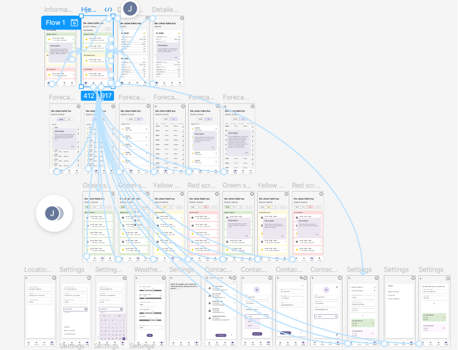
Interaktiv Figma-flow (v2)
Interaktiv Figma-flow
Jeg gjorde: Oppdaterte prototypen med realistiske overganger/tilstander.
Hvorfor: Mer rettferdig test av grensesnitt, brukervennlighet og oppgaveløsing.
Hva jeg lærte: Å teste å navigere i appen viser om navigasjon fungerer som tiltenkt.
Komponenter: I første Figma-prototype (v1) glemte vi å bruke Material 3. Etter workshoppen oppdaterte vi prototypen til Material 3-komponenter slik at utviklerne kunne gjenbruke de samme komponentene i implementasjonen.
Hva jeg lærte: Å forankre designet i et etablert designsystem (som Material 3) gjør samarbeidet mellom design og utvikling smidigere og sikrer at det som designes i Figma faktisk lar seg implementere i praksis.
Geriljatest
Jeg gjorde: Korte oppgaver med folk uten domenekunnskap.
Hvorfor: Testing av intuitivitet og første klikk. Er applikasjonen enkel å navigere for førstegangsbrukere?
Hva jeg lærte: Friske øyne avslører hvor vi må forenkle. Hovedpoenget med appen var å forenkle og gjøre planlegging mer effektivt. Da må navigasjonen være så enkel som mulig, slippe unødvendige trykk.
Tett samarbeid med utviklere
Jeg gjorde: Delte innsikt, vi prioriterte sammen, kvalitetssikret tilstander/feil gjennom hvert steg av prosessen.
Hvorfor: Minimere design-gjeld og kode-rewrites.
Hva jeg lærte: Små avklaringer tidlig sparer store endringer senere. Å involvere hele teamet i hele prosessen gir en felles forståelse for løsningen samt gjensidig læring. Alle var med på alt, jeg kodet programmerte dersom jeg hadde tid til det. Slik fikk jeg også tilhørighet til selve koden.
Systemtest & oppsummering
Jeg gjorde: Da prototyper var ferdig testet, funksjonalitet ble implementert i appen. Lot hovedbruker teste implementert funksjonalitet mot realistiske scenarioer.
Hvorfor: Verifisere at beslutningsstøtten oppleves rask og trygg.
Hva jeg lærte: Grundig designprosess tidlig kan gi mindre endringer i sluttfasen. Ettersom vi hadde jevnlig testet prototyper, kunne vi være relativt sikre på at den tiltenkte designet på appen skulle fungere optimalt i forhold til brukerbehov.
Meditasjonsball – IN1060
Samspill mellom form og funksjon → skjermfri, taktil veileder for pust.
Rolle: Prototyping (Arduino/Neopixel), interaksjonsdesign, research & test.
Kontekst: IN1060 (vår 2022) • Målgruppe: unge voksne (20–30) som er nye i meditasjon.
Prosjektside (UiO).
Oppstart: «Samspill mellom form og funksjon»
Jeg gjorde: Samlet gruppen og avklarte at temaet var eneste ramme – alt annet måtte vi definere.
Hvorfor: Et felles utgangspunkt før løsning.
Hva jeg lærte (prosess): Tidlig problemformulering, suksesskriterier og en enkel beslutningslogg gjorde prosjektet styrbart.
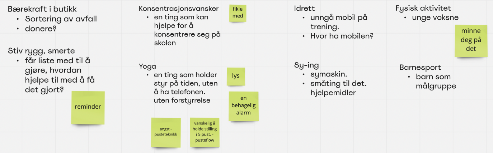
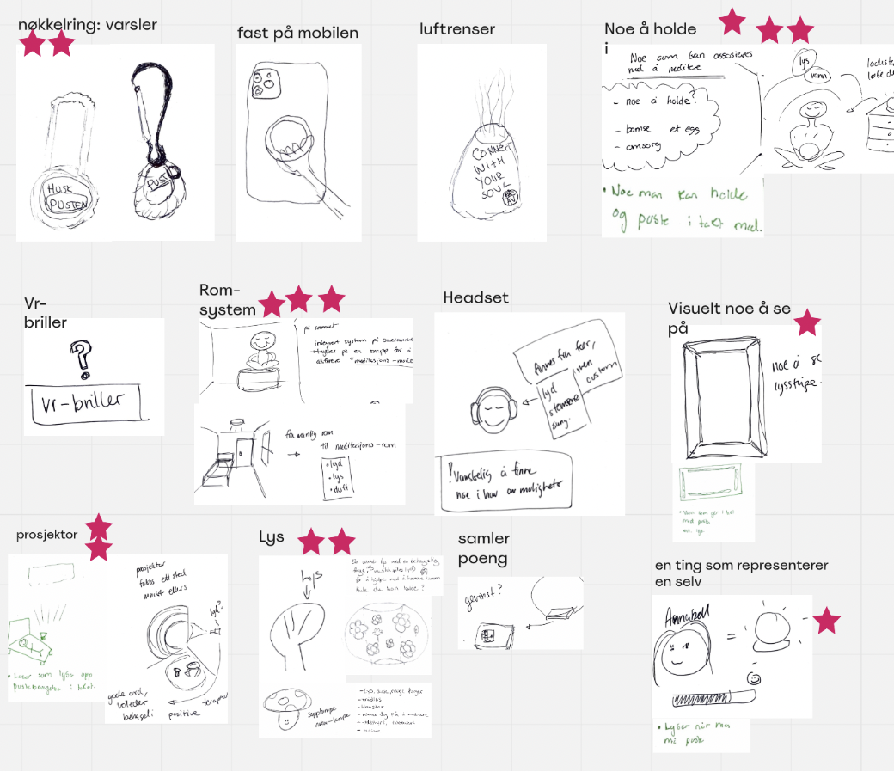
Brainstorm → fokus: pust
Jeg gjorde: Ledet åpen brainstorming og sorterte stikkord/assosiasjoner.
Hvorfor: Utforske bredt før forpliktelse.
Hva jeg lærte (prosess): En tydelig How might we…? ga en klar retning å konverge mot senere i prosessen.
Moodboard + domenekartlegging
Jeg gjorde: Lagde moodboard (ro/hav/varme farger) og samlet grunnbegreper om meditasjon/breathwork.
Hvorfor: Et felles visuelt språk og referanseramme.
Hva jeg lærte (prosess): Et lett tilgjengelig referansebibliotek (moodboard + notater) forkortet diskusjoner og reduserte omkamper.
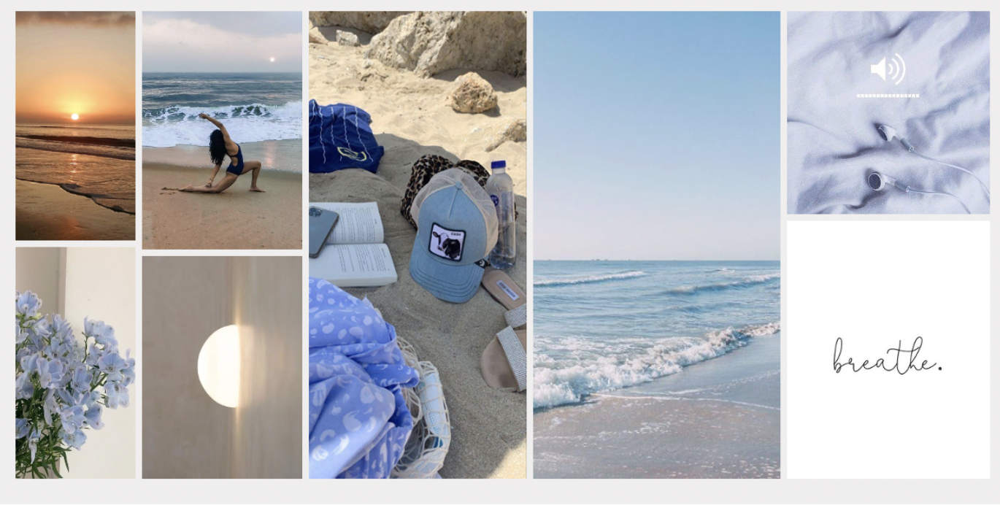
Look & feel: ro, varme og fokus.
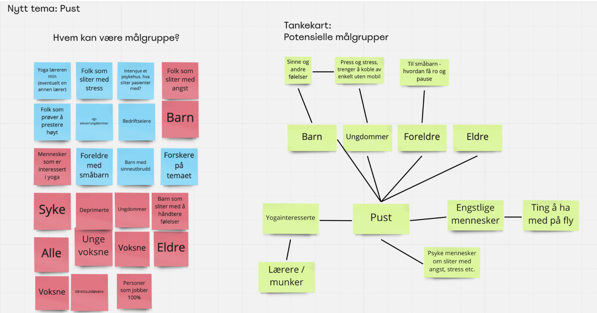
Fra brede antakelser til konkret målgruppe.
Målgruppe (Double Diamond)
Jeg gjorde: Idémyldring på målgrupper → affinity-diagram → konsolidering.
Hvorfor: Gi konseptet en klar adressat.
Hva jeg lærte (prosess): Å synliggjøre antakelser i et affinity-diagram gjorde konvergeringen raskere og bedre begrunnet.
Brukerinnsikt: pilot → intervju → koding
Jeg gjorde: Kjørte pilotintervju for å teste intervjuguiden → hovedintervjuer → kodet funn.
Hvorfor: Redusere metode-risiko og bygge sporbarhet fra data til beslutning.
Hva jeg lærte (prosess): En kort minipilot sparte tid, og tidlig koding ga tydelig sporbarhet gjennom resten av prosjektet.
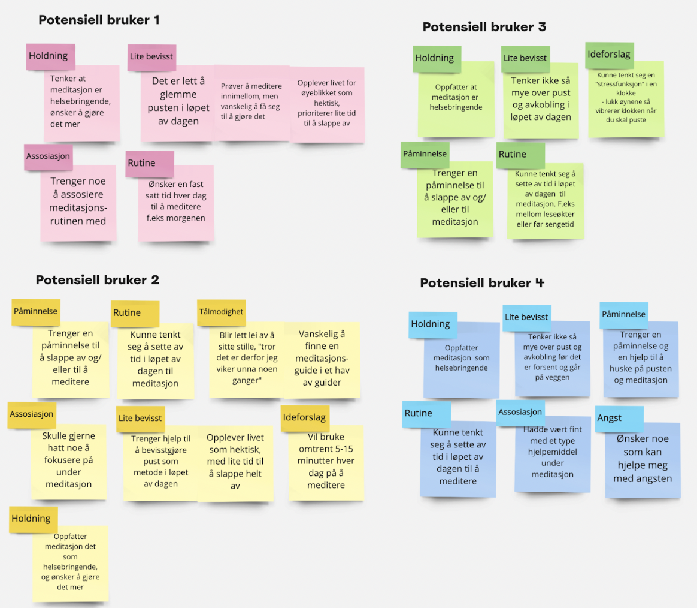
Strukturert innsikt → tryggere valg.
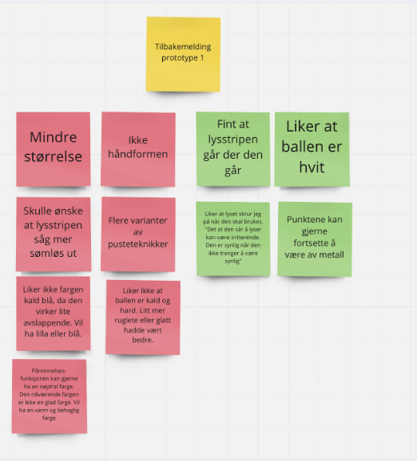
Skisseworkshop og dot-vote på tydelige kriterier.
Idéworkshop → avstemning
Jeg gjorde: Fasiliterte divergerende skissing og konvergerende avstemning mot kriterier.
Hvorfor: Skape eierskap og tempo i beslutningene.
Hva jeg lærte (prosess): Klare konvergeringskriterier (problempass, gjennomførbarhet, klarhet) gjorde valgene raske og lite kontroversielle. Vi landet på «Omsorgsball», «Romsystem» og «Liten reminder» som retninger.
Look & feel-workshop
Jeg gjorde: Testet farge, tempo, materiale og formstørrelser med målgruppen.
Hvorfor: Validere uttrykk før videre bygging.
Hva jeg lærte (prosess): Å teste én variabel om gangen (f.eks. tempo) ga renere signaler og kortere iterasjoner.
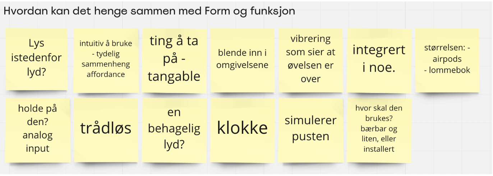
Kontrollerte variabler = tydeligere funn.
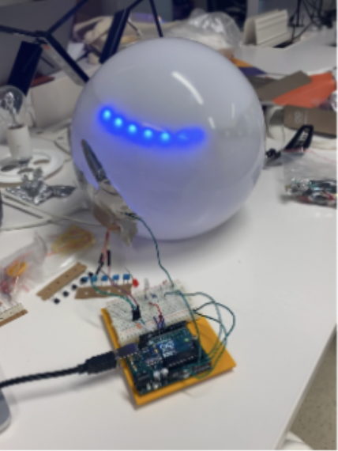
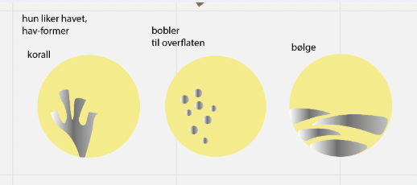
Prototype v1 – pust med lys
Jeg gjorde: Bygget Arduino/Neopixel-prototype med jevn inn–hold–ut og «pustesirkel».
Hvorfor: «Bygg for å tenke» og korte feedbacksløyfer.
Hva jeg lærte (prosess): Riktig fidelitet gjorde det lett å forkaste og bygge nytt uten å miste fart.
Tidsbasert påminnelse
Jeg gjorde: Testet hypotesen: økende lysstyrke jo lenger siden siste økt.
Hvorfor: Etablere vane uten mobilvarsler.
Hva jeg lærte (prosess): Å formulere testbare hypoteser («Vi tror… fordi… vi vet at… når…») forenklet evaluering og neste beslutning.
Hva jeg lærte (prosess): Korte iterasjonssløyfer med «scope freeze» per runde slo sjeldne, store endringer.
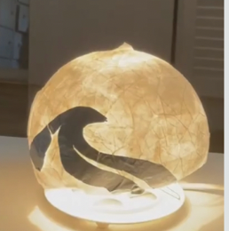
Artefakt = dokumentert prosess i fysisk form.
Resultat
Jeg gjorde: Leverte en skjermfri, håndholdt kule som visualiserer pust og minner diskret over tid.
Hvorfor: Redusere distraksjon og støtte en jevn, kroppslig rytme.
Hva jeg lærte (prosess): En enkel prosessmal (ramme → divergere → konvergere → prototype → test → beslutning) var gjenbrukbar i nye prosjekter.
Ekko-kamre og demokrati – IN3010
Installasjon som gjør algoritmisk polarisering synlig og følbart.
Jeg var ansvarlig for konsept, interaksjon og etikk i et tverrfaglig team.
Vi undersøkte hvordan algoritmisk polarisering kan gjøres følbart i et fysisk rom – ikke som en løsning,
men som en transformativ opplevelse som øker bevissthet og refleksjon.
Ramme & motivasjon – fra observasjon til spørsmål
Jeg gjorde: Startet med sterke reaksjoner på serien The Social Dilemma og observasjoner av polarisering på sosiale medier.
Hvorfor: «Hvem må vi forstå? Hva er egentlig problemet?» i stedet for å anta løsninger.
Hva jeg lærte: Transformativt design handler om bevisstgjøring og refleksjon, ikke problemløsning. Det endret hvordan vi framed hele prosjektet.
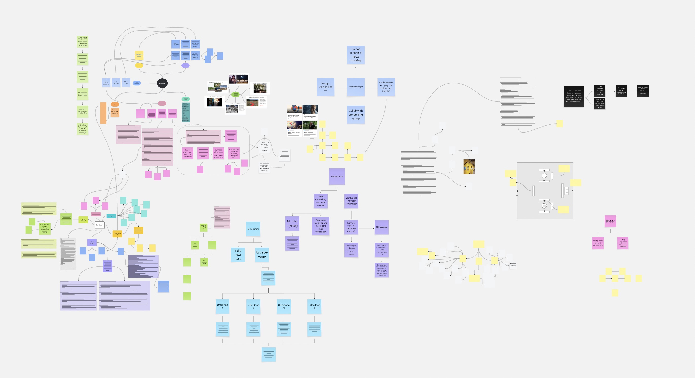
Gigamap: fra kompleksitet til innsikt. Kartlegging av aktører, infrastruktur og konsekvenser.
Gigamapping & konseptutvikling
Jeg gjorde: Fasiliterte gigamapping for å kartlegge aktører, plattformer, normer og konsekvenser av algoritmisk polarisering.
Hvorfor: Unngå å forenkle systemet til én løsning. Respekt for kompleksiteten først.
Hva jeg lærte: Å tegne systemet først gav oss innsikt i at den «usynlige infrastrukturen» (algoritmer, recommender systems) er det som driver polariseringen. Det ledet direkte til konseptet: to fysiske ekko-kamre som gjør denne infrastrukturen synlig.
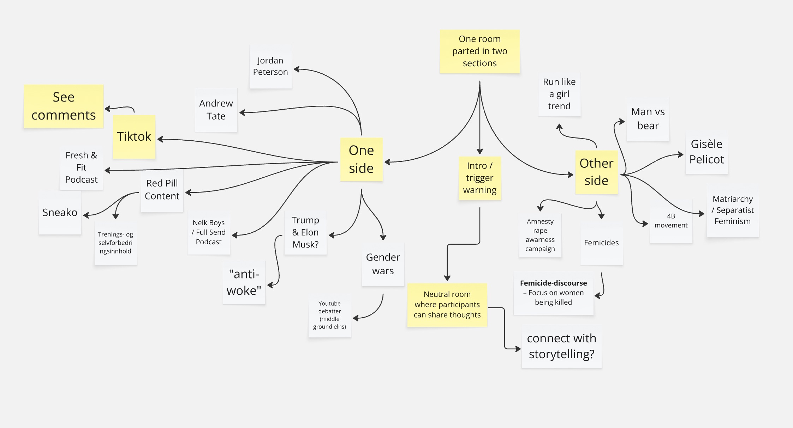
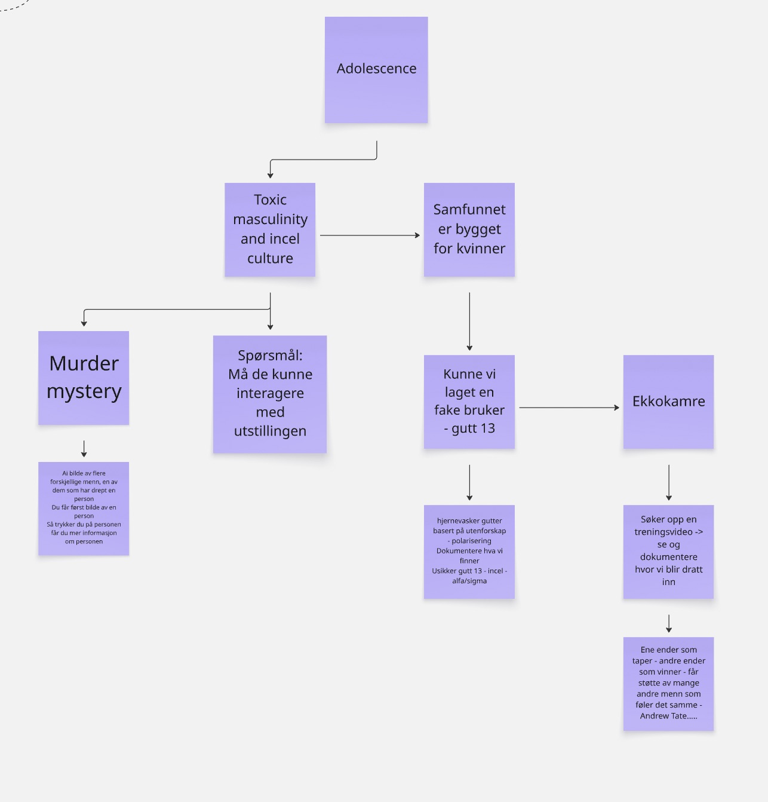
Idékart: to polariserte verdener illustrert gjennom kilder, influensere og temaer.
New Metaphors & idéworkshop – to polariserte verdener
Jeg gjorde: Tegnet to parallelle «verdener» som viser hvordan samme algoritmiske logikk skaper helt ulike echo chambers. Valgte temaene toxic masculinity vs. toxic femininity fordi de er gjenkjennelige, kontroversielle, men ikke like farlige som politisk ekstremisme.
Hvorfor: Vi ville lage empati og refleksjon, ikke avsky eller avstandtaking. Begge sidene skulle virke «rimelige» for deltakeren – helt til de innså konsekvensene av algoritmene.
Hva jeg lærte: Valget av tema påvirker alt. Dessa temaene var perfekt fordi de både er relevante for unge mennesker og etisk forsvarlige å utforske.
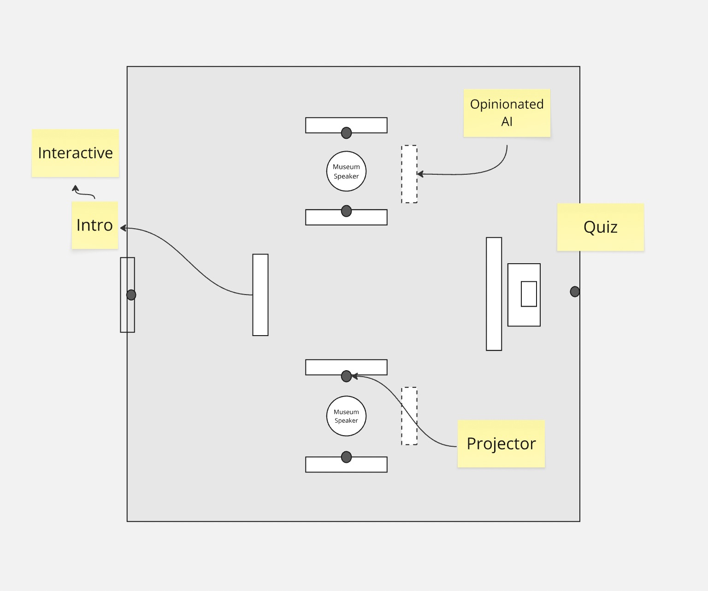
V0: rom delt i to soner. Intro → Toxic masc. (venstre) | Toxic fem. (høyre) → Refleksjon.
Prototype v0 – romdesign & kuratert innhold
Jeg gjorde: Designet tre-sone-struktur (intro → to kamre → refleksjon). Kuraterte TikTok-feeds basert på søkesord og algoritmer. Lagde plakatvegger som viser kilder, påstander og konsekvenser.
Hvorfor: Realistiske feeds trigget større emosjonell respons. Plakatvegger ga kontekst og kilder – nødvendig for at deltakerne skulle kunne reflektere kritisk.
Hva jeg lærte: Prototyping i ekte rom (ikke bare digitalt) viste hvor viktig miljø var.
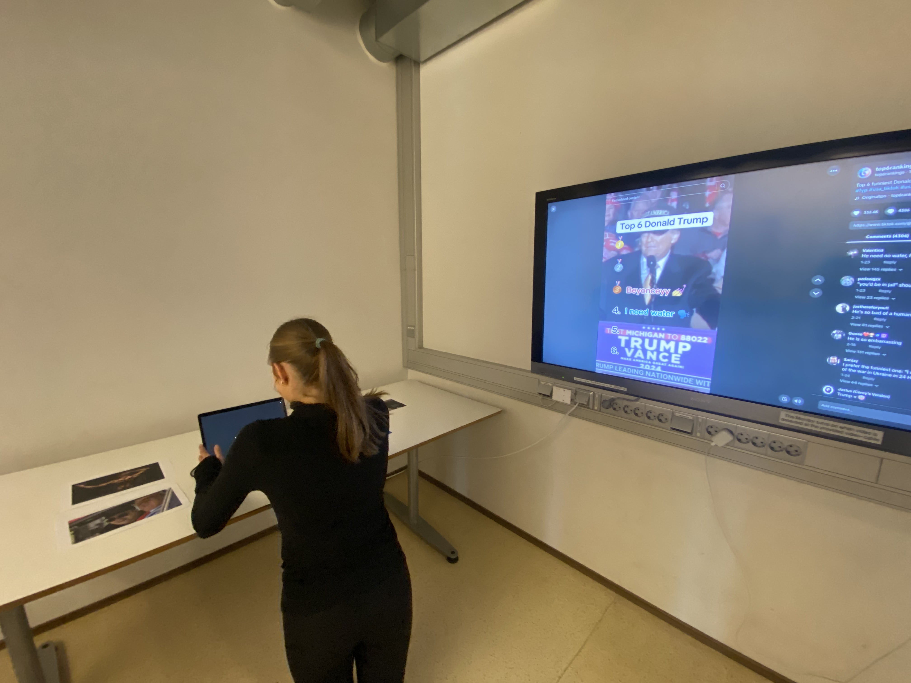
V1: Testlab-setting. For lyst, for lite kontekst.
Evaluering v1 – én kamre, for abstrakt
Jeg gjorde: Testet med én ekko-kamre-sone (toxic masculinity) med autoplay-feed + AI-chatbot i laboratorium-setting.
Funn: Deltakere skjønte ikke poenget. For lyst rom, manglende historier og kilder gjorde opplevelsen abstrakt og kald. De reagerte med skepsis, ikke forståelse.
Hvorfor: Atmosfære (lys, lyddesign, fysisk rom) er ikke dekorasjon – det er innholdet.
Hva jeg lærte: Vi måtte flytte ut av labben og inn i et rom som kunne «båre» installasjonen emosjonelt.
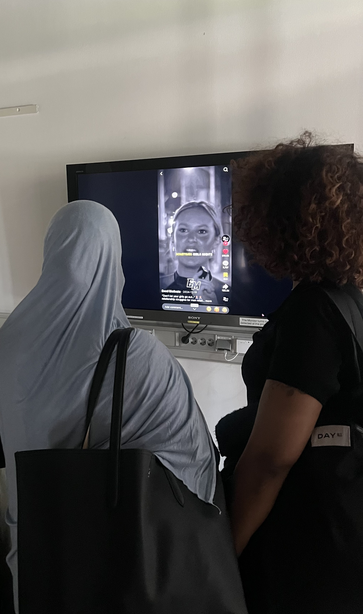
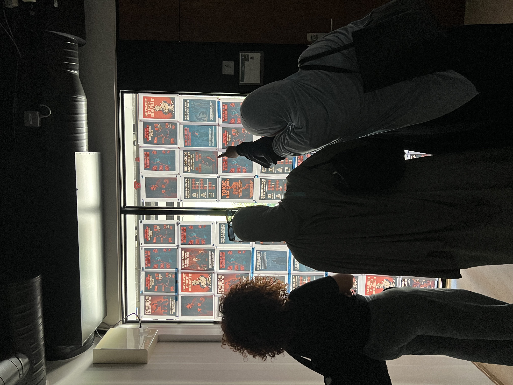
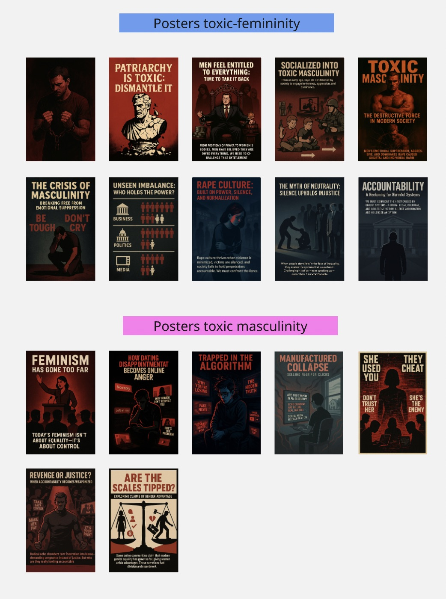
Evaluering v2 – to kamre + rødt lys + plakatvegger
Jeg gjorde: La til rødt lys, fylte plakatvegger med kilder og påstander, la til skjerm med autoplay-feed, og testet med større gruppe.
Funn: Betydelig dypere engasjement. Deltakere som besøkte begge kamre spontant begynte å diskutere parallellene. De opplevde hvordan ulike kilder og algoritmer skaper helt ulike virkeligheter.
Hvorfor: Rødt lys + fysiske kilder + kontrast mellom to rom gjorde systemet «leselig» og følelsesmessig ladet.
Hva jeg lærte: Små endringer i atmosfære kan få stor innvirkning. Vi var på rett vei.
Evaluering v3 – rødt lys, full effekt
Jeg gjorde: Intensiverte rødt lys, økte antall plakater, fjernet Mentimeter for å la spontan diskusjon oppstå. Testet i sluttvisning for hele klassen.
Funn: Opplevelsen var slagkraftig. Deltakere var emosjonelt berørt og reflekterte dypt uten at vi måtte styre eller moderate. Spontane diskusjoner oppsto om algoritmisk bias, nettatferd og ansvar.
Hvorfor: Når miljø er sterk nok, trenger du ikke å instruere opplevelsen – folk finner sitt eget forhold til den.
Hva jeg lærte: Dette er transformativt design i praksis. Ikke en løsning, men et spørsmål som deltakerne selv må møte.
Etikk & ansvar gjennom prosessen
Jeg gjorde: Utformet samtykkeskjema, debriefing-protokoll, balanserte fremstilling av begge perspektiver symmetrisk, og dokumenterte alle observasjoner.
Hvorfor: Transformativt design som bruker sterk emosjonell opplevelse må være etisk forankret. Det er lett å manipulere eller såre når følelsene er høye.
Hva jeg lærte:
Symmetri: Toxic masculinity og toxic femininity måtte behandles med samme respekt og samme designresurser.
Debrief: Mulighet til å snakke og reflektere etter installasjonen var like viktig som opplevelsen selv.
Sporbarhet: Dokumentasjon av alle designbeslutninger gjorde at vi kunne argumentere for hvorfor vi gjorde det vi gjorde.
Samtykke: Klar informasjon før deltakelse – folk visste hva de gikk inn i.
Konklusjon & videre forskning
Hva ble oppnådd: En installasjon som gjør algoritmisk «mørk materie» synlig, følelsesmessig og konkret. Design som spørsmål i stedet for svar.
Begrensninger: Liten gruppe, kort eksponering, to tema, lokalt begrenset.
Videre mulige retninger:
Longitudinell studie: Hva husker deltakere etter en uke eller måned?
Flere plattformer: Samme algoritmer på Instagram, YouTube, TikTok – hvordan varierer feeds?
Vandreutstilling: Modulært design som kan skaleres til flere byer/institusjoner.
Dypere AI: Chatbot som lytter og justerer sitt standpunkt dynamisk basert på deltaker-input.
Fokus på handling: Hva gjør deltakere etter installasjonen? Endrer de atferd på sosiale medier?
Role: Participatory designer and facilitator Partner: Paragone – student-run art history journal Methods: Participatory Design, future workshops, collaging, prototyping
Background
Paragone is a voluntary, student-run organisation with complex roles and varying levels
of engagement. Members experienced unclear expectations, uneven responsibility, and
challenges related to communication and collaboration.
Problem
How can participatory design support reflection, democratic participation, and
organisational development in a voluntary organisation – without forcing a
technological solution?
My role
I worked as a facilitator and designer, responsible for planning and conducting
workshops, selecting methods and materials, and continuously reflecting on power,
agenda-setting, and my own role as a designer.
Process
The project consisted of four workshops structured around the future workshop model:
critique, fantasy, and realisation. We used collaging, LEGO, and low-fidelity
prototyping to make experiences, values, and organisational challenges tangible and
negotiable.
Collaging to explore the current situation and surface concerns
Future models to articulate values and desired organisational practices
Collaborative concept development and prototyping
Solution / Outcome
The outcome was not a finished digital product, but a set of organisational insights
and a collaboratively developed game concept. The game functioned as a
design thing – a physical tool supporting reflection, dialogue, and shared
understanding of roles and responsibilities.
Results
Clearer expectations and responsibilities within the organisation
More inclusive and reflective meeting practices
Increased awareness of power and participation
Key learnings
This project strengthened my skills in power-aware facilitation and values-led design.
A key learning was understanding when deliberately refraining from technology is
necessary to support meaningful participation and democratic influence.
Workshop 1 – insights, sketches and prioritisation
Workshop 1 – insight & ideation
What we did: Diverged ideas, sketched and voted to prioritise concepts.
What we learned: Early sketches and shared prioritisation quickly created common understanding of needs.
Workshop 2 – testing and debrief
Workshop 2 – testing & debrief
What we did: Tested prototypes, collected feedback and discussed ethical/practical implications.
What we learned: Direct participant feedback shaped priorities for further work.
Workshop 3 – activities and notes
Workshop 3 – facilitation & data collection
What we did: Ran focused exercises to gather participant experiences and observations.
What we learned: Key patterns and user needs became clearer through field notes and group interaction.
Workshop 4 – plans and wrap-up
Workshop 4 – synthesis & next steps
What we did: Synthesised findings, created implementation proposals and a plan for further testing.
What we learned: Clear priorities and concrete next steps for continued work.
Interaction with AI and Autonomous Systems
IN5620 • University of Oslo • 2025
Short overview. Case content and process will be added here when available.
Building the Chatbot with OpenAI
As a follow-up to the ChatVGS concept, I implemented a prototype that integrates
directly with the OpenAI API rather than relying on a third-party UI. This allowed
fine-grained control over prompts, session context per student, and safety filters.
The server-side wrapper handles rate limiting, request logging and a system-level
prompt that guides the assistant to behave as an ethical learning coach.
Prototype: OpenAI integration
The prototype includes client-side conversation UI and controls for asking for
explanations at different depths. On the backend we swap models and adjust
system prompts depending on the requested behavior (explain, quiz, or guide).
Development in Platform Ecosystems
IN5320 • University of Oslo • 2025
Short overview. Examples and process will be added as the material is prepared.
Skybound – Rocket Launch Planner
IN2000 – Spring 2025
I was the UX lead in a cross-functional team of six. We started from a client spec (PortalSpace) but quickly needed
deeper insight into real context and needs. Through interviews, workshops and iterative prototyping we arrived at a solution
that made it faster and safer to find an optimal launch window.
Specification → need for real insight
The project began with a predefined specification from PortalSpace.
What I did: Reviewed the spec and separated assumptions from tasks.
Why: Avoid designing for hypothetical needs.
What I learned: Specs often describe solutions, not problems – clarify needs early.
Semi-structured interview
What I did: Interviewed an engaged PortalSpace participant who became our primary user.
Why: Understand context, needs and goals.
What I learned: An accessible primary user enables continuous validation; the spec is useful, but interviews deepen real understanding.
Crazy-8 workshop
Synthesis + Crazy-8
What I did: Coded findings, shared insights and facilitated a Crazy-8 session for shared understanding.
Why: Quickly explore IA, navigation and flows together.
What I learned: Sketching together builds ownership and alignment.
Figma prototype v1
What I did: Turned paper sketches into a clickable mobile prototype and presented it to the team.
Why: Visualize early to uncover gaps in flows and wording before usability testing.
What I learned: Even a simple clickable prototype quickly exposes assumptions – great for discussing navigation and concepts.
Workshop: paper + prototype
What I did: Let the user test, sketch and annotate on printouts and in the prototype.
Why: Low- and high-fi together trigger honest feedback on terms and flows.
What I learned: Navigation improved when the user “drew over” screens.
Interactive Figma flow (v2)
Interactive Figma flow
What I did: Updated the prototype with realistic transitions/states.
Why: Fairer test of interface, usability and task success.
What I learned: Testing navigation shows whether the structure works as intended.
Design system: We forgot to apply Material 3 in the first prototype. After the workshop we updated the prototype to use Material 3 components so developers could implement the same components one-to-one.
What I learned: Grounding the UI in a design system (Material 3) tightens the designer–developer collaboration and ensures what you design in Figma is feasible and maps cleanly to code.
Guerrilla test
What I did: Short tasks with people without domain knowledge.
Why: Validate intuitiveness and first-click. Is the app easy to navigate for first-time users?
What I learned: Fresh eyes reveal where to simplify; navigation must be minimal to speed planning.
Close collaboration with developers
What I did: Shared insights, co-prioritized, and quality-checked states/errors throughout the process.
Why: Minimize design debt and code rewrites.
What I learned: Early clarifications prevent big changes later; involving the whole team builds shared understanding.
System test & wrap-up
What I did: When prototypes were validated, functionality was implemented and tested by the primary user on realistic scenarios.
Why: Verify that the decision support feels fast and safe.
What I learned: Thorough early process reduced late changes; iterative testing increased confidence in fit.
Meditation Ball – IN1060
Screen-free, tactile breathing aid – light as a metronome, gentle haptics.
Role: Prototyping (Arduino/LED), interaction design, user testing.
Context: IN1060 (Spring 2022) • Target: young adults new to meditation.
Project page (UiO).
Problem: People want a calm breathing habit but get distracted by screens/notifications.
Approach: Screen-free object guiding inhale–hold–exhale through light; touch sensor to start/stop.
My deliverables: Light logic, Neopixel prototypes, time-since-last-session reminder, testing and iterations.
Kick-off: “Form & function in dialogue”
What I did: Gathered the team and clarified that the theme was the only constraint – everything else had to be defined by us.
Why: Establish a shared starting point before designing solutions.
Process learning: Early problem framing, success criteria and a simple decision log made the project manageable.
Brainstorm → focus: breathing
What I did: Led open brainstorming and sorted keywords/associations.
Why: Explore broadly before committing to a direction.
Process learning: A clear “How might we…?” gave a definitive direction to converge towards later in the process.
Moodboard & domain mapping
What I did: Created a moodboard (calm / ocean / warm tones) and collected core concepts about meditation and breathwork.
Why: Establish a shared visual language and frame of reference.
Process learning: An accessible reference library (moodboard + notes) shortened discussions and reduced rework.
Look & feel: calm, warmth and focus.From broad assumptions to a concrete target group.
Target group (Double Diamond)
What I did: Brainstormed target groups → affinity diagram → consolidation.
Why: Give the concept a clear audience.
Process learning: Making assumptions visible in an affinity diagram sped up and improved convergence.
User insight: pilot → interviews → coding
What I did: Ran a pilot interview to test the guide → main interviews → coded findings.
Why: Reduce method risk and build traceability from data to decision.
Process learning: A short mini-pilot saved time, and early coding provided clear traceability through the rest of the project.
Structured insight → safer decisions.Sketch workshop and dot-vote using clear criteria.
Idea workshop → voting
What I did: Facilitated divergent sketching and convergent voting against criteria.
Why: Create ownership and speed in decisions.
Process learning: Clear convergence criteria (problem fit, feasibility, clarity) made choices fast and uncontroversial. We landed on «Care ball», «Spatial system» and «Small reminder» as directions.
Look & feel workshop
What I did: Tested color, tempo, material and scale choices with the target group.
Why: Validate aesthetic direction before further building.
Process learning: Testing one variable at a time (e.g. tempo) produced cleaner signals and shorter iterations.
Controlled variables = clearer findings.
Prototype v1 – breathe with light
What I did: Built an Arduino/Neopixel prototype with inhale–hold–exhale timing and a breathing cycle.
Why: Build to think and shorten feedback loops.
Process learning: Appropriate fidelity made it easy to discard and rebuild without losing momentum.
Time-based reminder
What I did: Tested the hypothesis: increasing brightness the longer since the last session.
Why: Establish habit without mobile notifications.
Process learning: Formulating testable hypotheses ("We believe… because… when…") simplified evaluation and next decisions.
Hypothesis → experiment → decision.Tight feedback, short loops.
User test → iterations
What I did: Small, frequent adjustments (tempo, color, shape).
Why: Avoid large reworks late in the process.
Process learning: Short iteration loops with a per-round scope freeze prevented rare, large changes.
Artifact = documented process in physical form.
Outcome
What I did: Delivered a screen-free, hand-held sphere that visualises breathing and discreetly reminds over time.
Why: Reduce distraction and support an embodied, steady rhythm.
Process learning: A simple process template (frame → diverge → converge → prototype → test → decide) proved reusable in new projects.
Echo Chambers & Democracy – IN3010
Installation making algorithmic polarization visible and tangible.
I led concept, interaction and ethics in a cross-functional team.
We explored how algorithmic polarization becomes felt in a physical space – not as a solution,
but as a transformative experience that raises awareness and prompts reflection.
Frame & motivation – from observation to question
What I did: Started with strong reactions to The Social Dilemma and real-world observations of polarization on social media.
Why: Ask «Who must we understand? What's the actual problem?» rather than assume solutions.
What I learned: Transformative design is about awareness and reflection, not problem-solving. This reframed the entire project.
Gigamap: from complexity to insight. Mapping actors, infrastructure and consequences.
Gigamapping & concept development
What I did: Facilitated gigamapping to chart actors, platforms, norms and consequences of algorithmic polarization.
Why: Resist oversimplifying the system to one solution. Respect the complexity first.
What I learned: Mapping the system showed us that the «invisible infrastructure» (algorithms, recommender systems) is what drives polarization. This led directly to the concept: two physical echo chambers that make this infrastructure visible.
Idea map: two polarized worlds illustrated through sources, influencers and themes.
New Metaphors & ideation workshop – two polarized worlds
What I did: Mapped two parallel «worlds» showing how the same algorithmic logic creates entirely different echo chambers. Chose topics toxic masculinity vs. toxic femininity because they're recognizable, controversial, but not as dangerous as political extremism.
Why: We wanted to create empathy and reflection, not disgust or distance. Both sides should feel «reasonable» to the participant – until they realize the consequences of the algorithms.
What I learned: Topic choice impacts everything. These themes were perfect because they're relevant to young people and ethically defensible to explore.
V0: room divided into two zones. Intro → Toxic masc. (left) | Toxic fem. (right) → Reflection.
Prototype v0 – room design & curated content
What I did: Designed three-zone structure (intro → two chambers → reflection). Curated TikTok feeds based on search terms and algorithmic logic. Created poster walls showing sources, claims and consequences.
Why: Realistic feeds triggered stronger emotional response. Poster walls provided context and sources – necessary for critical reflection.
What I learned: Prototyping in real space (not just digital) showed how crucial environment was.
V1: Lab setting. Too bright, too little context.
Evaluation v1 – one chamber, low impact
What I did: Tested with one echo chamber (toxic masculinity) with autoplay feed + AI chatbot in lab setting.
Findings: Participants didn't grasp the point. Too bright, missing sources and stories made the experience abstract and cold. They reacted with skepticism, not understanding.
Why: Atmosphere (lighting, sound, physical space) is not decoration – it is the content.
What I learned: We needed to move out of the lab and into a space that could emotionally carry the installation.
Evaluation v2 – two chambers + red light + poster walls
What I did: Added red lighting, filled poster walls with sources and claims, added screen with autoplay feed, tested with larger group.
Findings: Significantly deeper engagement. Participants who visited both chambers spontaneously discussed the parallels. They experienced how different sources and algorithms create completely different realities.
Why: Red light + physical sources + contrast between two rooms made the system «legible» and emotionally charged.
What I learned: Small changes in atmosphere can have outsized impact. We were on the right track.
Evaluation v3 – red light, full effect
What I did: Intensified red lighting, increased number of posters, removed Mentimeter to allow spontaneous discussion to emerge. Tested in final presentation for entire class.
Findings: The experience was powerful and aligned with transformative design intent. Participants were moved and reflected deeply without moderation. Spontaneous discussions emerged about algorithmic bias, online behavior and responsibility.
Why: When environment is strong enough, you don't need to control the experience – people find their own relationship with it.
What I learned: This is transformative design in practice. Not a solution, but a question that participants must face themselves.
Ethics & responsibility throughout
What I did: Designed consent forms, debriefing protocols, ensured balanced representation of both perspectives symmetrically, and documented all observations.
Why: Transformative design using strong emotional experience must be ethically anchored. It's easy to harm or manipulate when emotions run high.
What I learned:
Symmetry: Both 'toxic' perspectives had to be treated with equal respect and design resources.
Debrief: Space to talk and reflect after was as important as the experience itself.
Traceability: Documenting design decisions made it possible to argue for the ethics.
Consent: Clear information before participation – people knew what they were entering.
Conclusion & future research
What was achieved: An installation that makes algorithmic «dark matter» visible, emotional and concrete. Design as question instead of answer.
Limitations: Small group, short exposure, two topics, locally limited.
Future directions:
Longitudinal study: What do participants remember after one week or month?
Multiple platforms: Same algorithms on Instagram, YouTube, TikTok – how do feeds vary?
Traveling exhibition: Modular design that can scale to multiple cities/institutions.
Deeper AI: Chatbot that listens and dynamically adjusts its stance based on participant input.
Focus on action: What do participants do after the installation? Do they change behavior on social media?